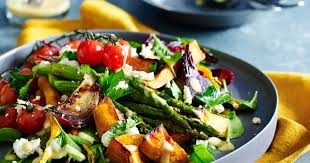

VEGETABLE SALAD

Benefits of Vegetable Salad
Dark leafy greens and brightly coloured vegetables ensure you get a range of vitamins and minerals, helping you to maintain a healthy body and mind.Salad greens contain Vitamin A, Vitamin C, beta-carotene, calcium, folate, fiber, and phytonutrients
Steps to make Vegetable Salad
- -->Choose Your Base. Red & Green Leaf Lettuce. Sweet, delicate flavor
- -->Add Fruits & Veggies. Avocado. Cucumbers
- -->Mix in Crunch. Toasted Nuts. Carrots
- -->Amp Up the Flavor. Cheese. Scallions
- -->Drizzle & Done! Delicato Extra Virgin Olive Oil + salt +pepper